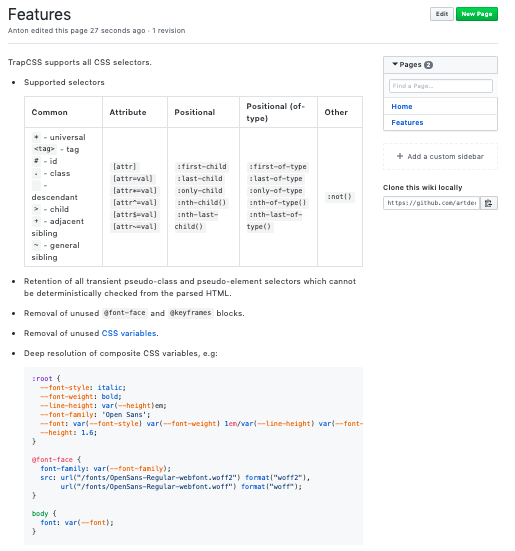

###! Features

This page contains description of supported features. I've simply copied the table from the source. A cool thing we can do, though, is to create an example file right in the _Features_ directory itself, as it won't be read by _Documentary_ that scans for `md`, `markdown` and `htm[l]` files only. We can then simply pass the relative path to the example:

```md
- Deep resolution of composite CSS variables, e.g:
  %EXAMPLE: ./example.css%
```

Mind the indentation that is used with example market &mdash; it's needed so that _GitHub_ recognises it as part of the list item.

<p>
  
</p>

</div>